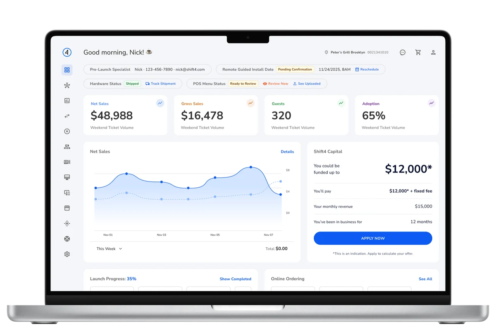
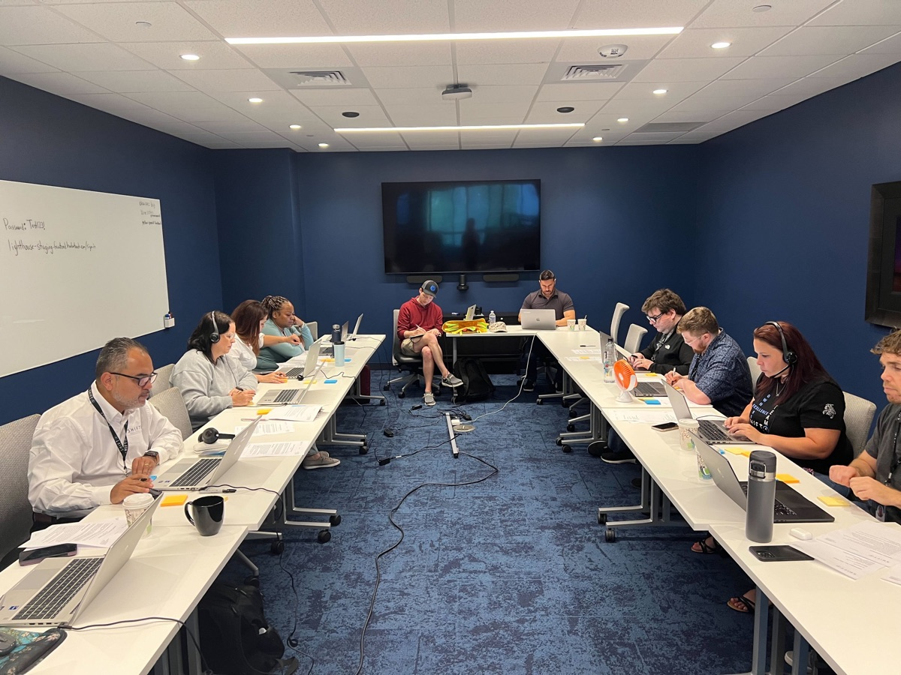
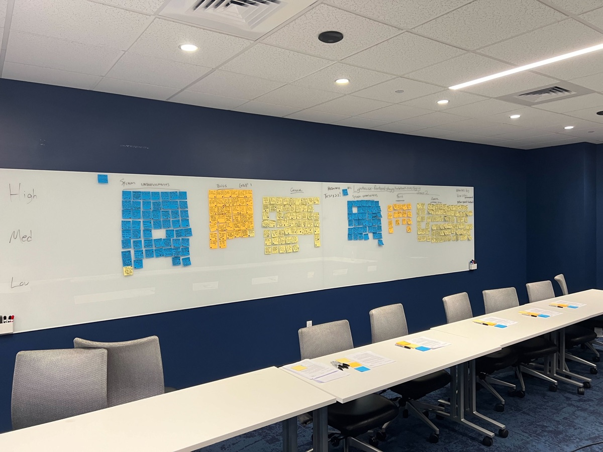
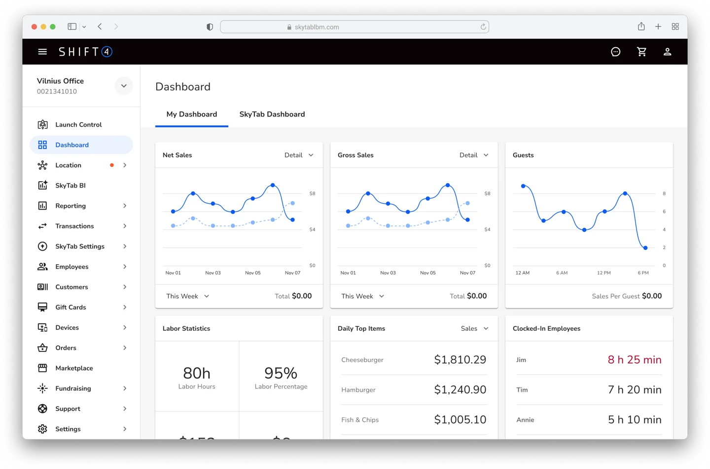
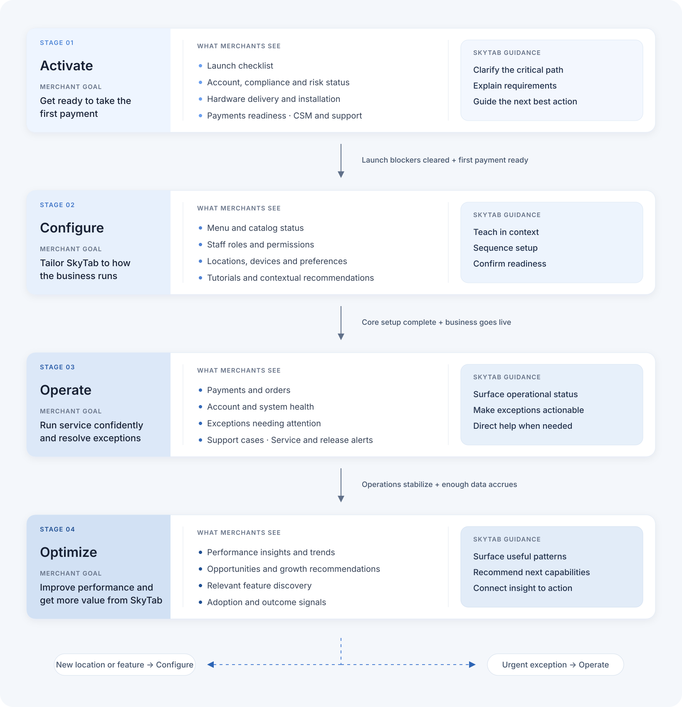

Activate
Get ready to take the first payment.
Prioritize required tasks, deadlines, installation status, and support.
SkyTab onboarding
I designed a state-aware Merchant Hub that helped restaurants launch faster and discover more SkyTab capabilities.

A restaurant preparing to launch needed setup tasks, deadlines, installation status, and access to its Customer Success Manager. A live restaurant needed performance data and ways to expand its setup. Merchant Hub treated both the same.

Launch requirements were scattered across the product.
New merchants saw dashboard information before it could help them.
The interface did not adjust as merchant goals changed.
The opportunity was not to build separate dashboards. It was to create one system that changed its priorities as merchant context changed.
Workshops and affinity mapping organized merchant needs around four recurring jobs. This became the single model used across onboarding, daily operations, and feature discovery.
Get ready to take the first payment.
Prioritize required tasks, deadlines, installation status, and support.
Tailor SkyTab to the business.
Sequence setup, teach in context, and confirm readiness.
Run service with confidence.
Surface performance, system health, exceptions, and timely support.
Find opportunities to grow.
Connect trends and merchant needs to relevant capabilities.


The work reframed onboarding as an ongoing lifecycle rather than a single setup flow. Merchant context, not account type, became the strongest organizing principle.
The detailed lifecycle map and workshop artifacts are available in the deep dive below.
State-aware, not state-gated.
Inside the work / SkyTab Merchant Hub
The merchant’s situation is. Explore how I changed the same product from a generic dashboard into a guide for launch, daily operations, and growth.
00 / The problem
New restaurants and live restaurants saw the same data-first layout. Launch requirements were scattered, with no clear next action.
The design decisionChange the priority, not access to the product.

01 / Activate
Setup progress, installation status, and support come first. A new merchant needs a clear path to their first payment.
Design priorityReadiness before reporting

02 / Operate
Once a restaurant is live, performance data and recommendations take priority. The same hub now supports the rhythm of daily operations.
Design priorityPerformance in context

03 / Optimize
Feature discovery connects merchants to additional SkyTab capabilities, with a path from understanding a feature to activating it.
Design priorityDiscovery through activation

The dashboard keeps its structure familiar while changing the information and actions that deserve priority.
Required tasks, launch progress, installation details, menu programming, and Customer Success support move to the foreground. Optional features remain available without competing with launch work.

After launch, the same dashboard shifts toward real-time performance, operational status, tutorials, and recommendations that support the restaurant's daily work.

Relevant capabilities appear as the merchant is ready for them, connecting feature activation to an immediate business need instead of presenting a generic catalog.

Explorations compared how setup, status, and optional capabilities should compete for attention. The final direction gave required launch work a clear visual lead.

The system supported merchants from their first setup task through ongoing feature activation.
Reach through the redesigned Launch Center since launch.
Reduction in onboarding order confirmation time.
Value-Added Service activations recorded in 2025.
Measurement note: these figures combine product reach, process improvement, and feature activation. They are not presented as isolated A/B test results.
Complexity handled at the system level can create a simpler experience for merchants. A shared structure also made it possible to change priorities without making each lifecycle stage feel like a different product.
I would explore stronger mobile workflows, predictive feature recommendations, and performance benchmarks that help live merchants understand what to do next.
Design for the user's context, not your convenience.
Supporting artifacts are available for reviewers who want to inspect the system in more detail.



283 issues resolved, 29 open. Error-state coverage and close design-engineering collaboration contributed to a 90% resolution rate while the product continued to evolve.
Open interactive prototype